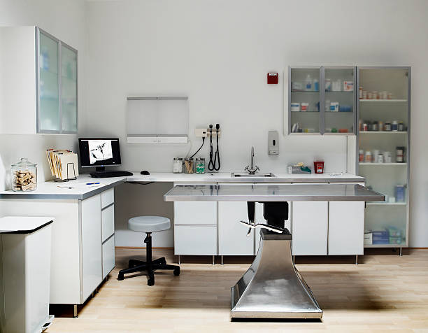
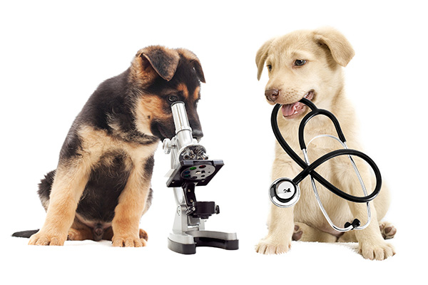

Atención Médica Profesional
Bienvenidos al Consultorio Veterinario Gallardo. Somos un centro especializado en el cuidado integral de mascotas, donde nuestra prioridad es ofrecer diagnósticos precisos y tratamientos efectivos. Con años de experiencia en el sector, nos esforzamos por mantener un ambiente seguro y confiable tanto para los animales como para sus dueños, utilizando tecnología de vanguardia y un trato profundamente humano.

Vacunación

Laboratorio

Limpieza Dental
Nuestros Servicios Profesionales
🩺 Consultas: Medicina preventiva y general.
💉 Vacunas: Esquemas de refuerzo y desparasitación.
🔬 Laboratorio: Análisis de sangre y patologías.
✂️ Estética: Baño medicado y corte de raza.
🦷 Odontología: Limpieza dental profunda.
🦴 Radiología: Rayos X y diagnósticos óseos.
💊 Farmacia: Venta de medicamentos especializados.
🍽️ Nutrición: Alimentos premium y dietas clínicas.